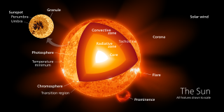

The Sun is a yellow dwarf star, a hot ball of glowing gases at the heart of our solar system. Its gravity holds the solar system together, keeping everything from the biggest planets to the smallest particles of debris in its orbit. The connection and interactions between the Sun and Earth drive the seasons, ocean currents, weather, climate, radiation belts and auroras. Though it is special to us, there are billions of stars like our Sun scattered across the Milky Way galaxy. The Sun has many names in many cultures. The Latin word for Sun is “sol,” which is the main adjective for all things Sun-related: solar.
The Sun doesn't behave the same way all the time. It goes through phases of its own solar cycle. Approximately every 11 years, the Sun’s geographic poles change their magnetic polarity. When this happens, the Sun's photosphere, chromosphere and corona undergo changes from quiet and calm to violently active. The height of the Sun’s activity, known as solar maximum, is a time of solar storms: sunspots, solar flares and coronal mass ejections. These are caused by irregularities in the Sun's magnetic field and can release huge amounts of energy and particles, some of which reach us here on Earth. This space weather can damage satellites, corrode pipelines and affect power grids.

With a radius of 432,168.6 miles (695,508 kilometers), our Sun is not an especially large star, many are several times bigger, but it is still far more massive than our home planet: 332,946 Earths match the mass of the Sun. The Sun’s volume would need 1.3 million Earths to fill it.
The Sun is 93 million miles (150 million kilometers) from Earth. Its nearest stellar neighbor is the Alpha Centauri triple star system: Proxima Centauri is 4.24 light years away, and Alpha Centauri A and B, two stars orbiting each other are 4.37 light years away. A light year is the distance light travels in one year, which is equal to 5,878,499,810,000 miles or 9,460,528,400,000 kilometers.
The Sun and the rest of the solar system formed from a giant, rotating cloud of gas and dust called a solar nebula about 4.5 billion years ago. As the nebula collapsed because of its overwhelming gravity, it spun faster and flattened into a disk. Most of the material was pulled toward the center to form our Sun, which accounts for 99.8% of the mass of the entire solar system.
Like all stars, the Sun will someday run out of energy. When the Sun starts to die, it will swell so big that it will engulf Mercury and Venus and maybe even Earth. Scientists predict the Sun is a little less than halfway through its lifetime and will last another 6.5 billion years before it shrinks down to be a white dwarf.
The Sun's enormous mass is held together by gravitational attraction, producing immense pressure and temperature at its core. The Sun has six regions: the core, the radiative zone, and the convective zone in the interior; the visible surface, called the photosphere; the chromosphere; and the outermost region, the corona. At the core, the temperature is about 27 million degrees Fahrenheit (15 million degrees Celsius), which is sufficient to sustain thermonuclear fusion. This is a process in which atoms combine to form larger atoms and in the process release staggering amounts of energy. Specifically, in the Sun’s core, hydrogen atoms fuse to make helium. The energy produced in the core powers the Sun and produces all the heat and light the Sun emits. Energy from the core is carried outward by radiation, which bounces around the radiative zone, taking about 170,000 years to get from the core to the top of the convective zone. The temperature drops below 3.5 million degrees Fahrenheit (2 million degrees Celsius) in the convective zone, where large bubbles of hot plasma (a soup of ionized atoms) move upwards. The surface of the Sun—the part we can see—is about 10,000 degrees Fahrenheit (5,500 degrees Celsius). That's much cooler than the blazing core, but it's still hot enough to make carbon, like diamonds and graphite, not just melt, but boil. s
The Sun itself is not a good place for living things, with its hot, energetic mix of gases and plasma. But the Sun has made life on Earth possible, providing warmth as well as energy that organisms like plants use to form the basis of many food chains.
There are more than 150 known moons in our solar system and several
more awaiting confirmation of discovery. Of the eight planets, Mercury
and Venus are the only ones with no moons. The giant planets grab the
most moons. Jupiter and Saturn have long lead our solar system’s moon
counts.
In some ways, the swarms of moons around these worlds resemble mini
versions of our solar system. Pluto, smaller than our own moon, has
five moons in its orbit, including the Charon, a moon so large it
makes Pluto wobble. Even tiny asteroids can have moons. In 2017,
scientists found asteroid 3122 Florence had two tiny moons.